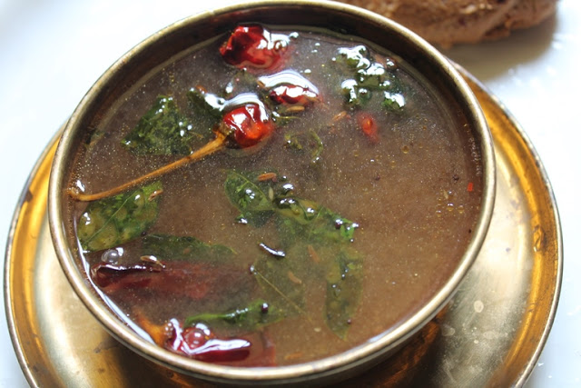

Tamil Nadu has always been a hub for food connoisseurs to take a great pleasure of some of the finest traditional cuisine in the country. The state is reckoned to be one of the best places in India for offering a bagful of culinary treasure for tourists to savour. But, the fascinating things about Tamil Nadu is the touch of their customary culture which is served with its every delectable fare.The popular cuisine of Tamil Nadu perfectly connects with its people and is incredibly dipped with the right amount and quantity of spices along with all other ingredients.
Sambar
Ingredients:
- 1 cup toor dal
- 1 tomato, chopped
- 1 onion, chopped
- 1 carrot, chopped
- 1 potato, chopped
- 1 drumstick, chopped
- 2 tbsp sambar powder
- Tamarind, small lemon-sized
- Salt to taste
- 2 tbsp oil
- 1 tsp mustard seeds
- Curry leaves
- Coriander leaves
Directions:
- Pressure cook toor dal with turmeric until soft.
- Soak tamarind in water and extract juice.
- In a pot, heat oil and add mustard seeds, curry leaves.
- Add onions and sauté until golden brown.
- Add tomatoes and cook until soft.
- Add vegetables, sambar powder, salt, and tamarind juice.
- Cook until vegetables are tender.
- Add cooked dal and bring to a boil.
- Garnish with coriander leaves and serve hot with rice.
Rasam
Ingredients:
- 1 tomato, chopped
- Tamarind, small lemon-sized
- 2 cups water
- 2 tsp rasam powder
- 1/4 tsp turmeric powder
- Salt to taste
- 1 tsp mustard seeds
- 1 tsp cumin seeds
- Curry leaves
- 2 tsp ghee
- Coriander leaves
Directions:
- Soak tamarind in water and extract juice.
- Boil tamarind juice with tomatoes, turmeric, and salt.
- Add rasam powder and simmer.
- Heat ghee in a pan and add mustard seeds, cumin seeds, and curry leaves.
- Pour the tempering into the rasam.
- Garnish with coriander leaves and serve hot with rice.
Idli
Ingredients:
- 2 cups rice
- 1 cup urad dal
- 1 tsp fenugreek seeds
- Salt to taste
- Water
Directions:
- Soak rice and urad dal with fenugreek seeds separately for 6 hours.
- Grind urad dal to a smooth batter and rice to a slightly coarse batter.
- Mix both batters and add salt.
- Ferment the batter overnight.
- Pour the batter into idli molds and steam for 10-12 minutes.
- Serve hot with chutney and sambar.
Dosa

Ingredients:
- 2 cups rice
- 1 cup urad dal
- 1 tsp fenugreek seeds
- Salt to taste
- Oil for cooking
Directions:
- Soak rice and urad dal with fenugreek seeds separately for 6 hours.
- Grind urad dal to a smooth batter and rice to a slightly coarse batter.
- Mix both batters and add salt.
- Ferment the batter overnight.
- Heat a dosa pan and pour a ladle of batter, spreading it thinly.
- Drizzle oil around the edges and cook until golden brown.
- Serve hot with chutney and sambar.
Pongal
Ingredients:
- 1 cup rice
- 1/4 cup moong dal
- 1 tsp black pepper
- 1 tsp ginger, chopped
- 2 tbsp ghee
- 1/4 cup cashews
- 1/4 cup grated coconut
- Salt to taste
- Curry leaves
Directions:
- Roast moong dal in a pan until golden.
- Cook rice and moong dal together in a pressure cooker.
- In a separate pan, heat ghee and add cashews, black pepper, ginger, and curry leaves.
- Add the tempering to the cooked rice and dal mixture.
- Mix well and cook for a few more minutes.
- Serve hot with coconut chutney.
Vada
Ingredients:
- 1 cup urad dal
- 1 onion, finely chopped
- 2 green chilies, chopped
- 1 tsp cumin seeds
- 1 tsp black pepper
- Salt to taste
- Oil for frying
Directions:
- Soak urad dal in water for 4-6 hours.
- Drain and grind dal to a smooth batter.
- Add onions, green chilies, cumin seeds, black pepper, and salt to the batter.
- Heat oil in a pan for frying.
- Shape batter into small round balls and flatten slightly.
- Fry in hot oil until golden brown.
- Drain on paper towels and serve hot with coconut chutney.